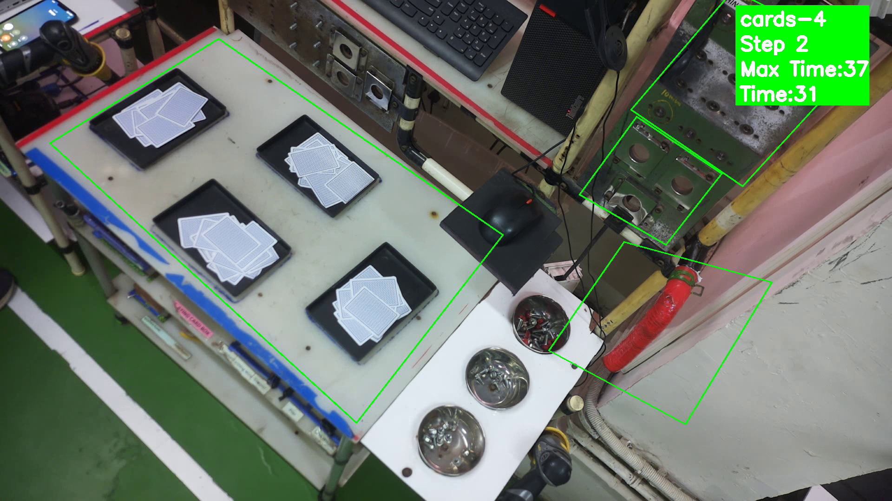

99.7% AccuracyActivity Assessment System
CV-based system monitoring trainer activities during assembly tasks at 99.7% accuracy — tracks task duration, idle time, and transitions across 10 assembly steps.
99.7% Accuracy
10 Activities Monitored
Use-Cases
- Putting 4 black boxes on table (contour + color thresholding)
- Splitting cards (motion detection + contour detection)
- Picking up 4 screws (color segmentation + contour detection)
- Tightening bolts with gun (color segmentation + sequence logic)
- Torquing bolts with limit wrench (object detection + color segmentation + sequence logic)
- Tightening screw with gun (color segmentation + dilation/erosion + contour)
- Fixing and defixing hose and clamp (object detection + sequence logic + color segmentation)
- Coupler fitment & check (color segmentation + contour + image thresholding)
- Gourmet fitment & check (color segmentation + image thresholding)
- Fitment of earthing wire (color segmentation + contour detection)